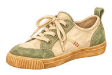

SKYE ISLAND
天空岛
A LITTLE WORLD, SLOWLY ALIVE.
01
庭院
02
店内
+
推门进入
☀ 晴天
午后 · 15:24
晴，适合发呆
环绕
全岛
日光
留影
拖动环视 · 滚轮缩放
N
正在点亮天空岛
SKYE ISLAND
×
MAKE YOURSELF AT HOME
这里，慢一点也没关系。
人物头像是相遇手记；想听故事，点选场景里的朋友。随时打开菜单，或慢慢看风景。
1
全岛概览
2
漫游
R
漫游平视
Esc
释放鼠标／起身
场景和人物均为实时 3D。环境声默认关闭。